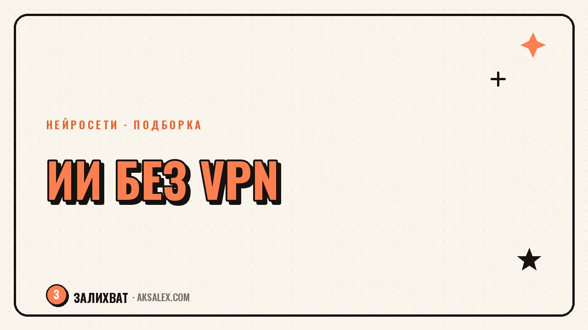

Бесплатные нейросети на русском без VPN

Часть популярных нейросетей недоступна из России без VPN, и это отталкивает многих новичков ещё на старте: настраивать обход блокировок ради пробного текста не хочется. Хорошая новость - российские сервисы за последние пару лет заметно подросли, а некоторые зарубежные модели встроены в доступные интерфейсы. Собрали подборку бесплатных нейросетей на русском, которые открываются без VPN прямо сейчас, по задачам: текст, картинки, голос и видео.
Нейросети для текста без VPN
Для работы с текстом на русском языке доступны несколько сервисов от крупных компаний, которые не требуют обхода блокировок. Они отличаются по глубине понимания контекста и по тому, насколько естественно звучит русский язык в ответах - для рутинных задач вроде черновика письма или идеи для поста разница не критична.
- YandexGPT - встроен в сервисы Яндекса, доступен через Алису и отдельные интерфейсы
- GigaChat от Сбера - работает в браузере и приложении, понимает русский контекст
- Suno-подобные и другие нишевые модели с интерфейсом на русском - для конкретных узких задач
У обоих крупных сервисов есть бесплатный доступ с ограничением по количеству запросов или токенов, а платная подписка снимает эти лимиты. Для разовых задач - написать пост, проверить текст, сгенерировать идею - бесплатного лимита обычно достаточно.
Нейросети для картинок и обложек
Генерация изображений на русском языке без VPN тоже стала доступнее. Российские сервисы понимают запросы на русском без перевода, что удобно новичкам - не нужно формулировать промпт на английском, чтобы получить приличный результат.
Что стоит попробовать
- Kandinsky (Sber AI, Fusion Brain) - генерация изображений по текстовому описанию на русском
- Шедеврум от Яндекса - простой интерфейс, доступен в приложении и браузере
- Встроенные генераторы обложек в некоторых российских платформах для дизайна
Для обложки блога или иллюстрации к посту российские генераторы картинок закрывают задачу без VPN и без перевода промпта.
Голос и озвучка без VPN
Синтез речи на русском языке - направление, где отечественные сервисы развиты неплохо, потому что интонации и произношение русского текста они настраивают именно под родной язык, а не адаптируют иностранную модель.
Такие инструменты подходят для озвучки коротких роликов, аудиоверсий текста или голосовых подсказок в презентациях. Качество голоса в бесплатном тарифе обычно ограничено набором стандартных голосов без тонкой настройки интонации, но для базовых задач этого достаточно.
- Голосовые движки, встроенные в сервисы Яндекса и Сбера
- Отдельные сервисы озвучки с бесплатным пробным лимитом на количество символов
- Инструменты для подкастов с автоматической расшифровкой и обратной генерацией речи
Сравнение сервисов по задачам
Ниже - сводная таблица по основным направлениям, чтобы быстро понять, куда идти под конкретную задачу, без необходимости пробовать всё по очереди.
| Задача | Сервис | Доступ без VPN | Ограничение бесплатного тарифа |
|---|---|---|---|
| Текст на русском | YandexGPT, GigaChat | Да | Лимит запросов или токенов в сутки |
| Картинки по описанию | Kandinsky, Шедеврум | Да | Лимит генераций в сутки |
| Озвучка текста | Голосовые движки Яндекса и Сбера | Да | Ограниченный набор голосов |
| Короткое видео | Встроенные видеоредакторы соцсетей с ИИ-функциями | Да | Базовые эффекты без продвинутых функций |
Как выбрать сервис под свою задачу
Не пытайся сразу освоить всё - выбери один сервис под самую частую свою задачу и попробуй его на реальном примере. Если пишешь посты - начни с текстовой нейросети, если делаешь обложки - с генератора изображений.
Обращай внимание на лимиты бесплатного тарифа: у большинства сервисов это количество запросов в сутки или объём генераций. Если лимита не хватает для регулярной работы, сравни несколько сервисов между собой, прежде чем платить за подписку в одном из них.
Короткий чек-лист выбора
- Проверь, открывается ли сервис без VPN именно в твоём регионе
- Попробуй бесплатный лимит на реальной задаче, а не тестовом запросе
- Сравни качество результата на русском языке - не все модели одинаково хорошо его понимают
- Оцени, хватает ли бесплатного лимита на твою реальную частоту использования
Частые вопросы
Какие нейросети работают в России без VPN?
Стабильно без VPN работают российские сервисы: YandexGPT, GigaChat для текста, Kandinsky и Шедеврум для изображений, а также встроенные голосовые движки Яндекса и Сбера. Доступ к части зарубежных моделей может ограничиваться или меняться, поэтому лучше проверять актуальность перед использованием.
Есть ли полностью бесплатные нейросети на русском?
Да, у большинства крупных российских сервисов есть бесплатный тариф с лимитом запросов или генераций в сутки. Для разовых или нечастых задач этого лимита обычно хватает без перехода на платную подписку.
Какая нейросеть лучше понимает русский язык?
Российские сервисы вроде YandexGPT и GigaChat изначально обучались с упором на русский язык, поэтому обычно звучат естественнее в бытовых и деловых формулировках. Для конкретной задачи стоит сравнить пару вариантов на своём тексте.
Можно ли сгенерировать картинку на русском языке без перевода на английский?
Да, российские генераторы изображений вроде Kandinsky и Шедеврум понимают запросы прямо на русском без необходимости переводить промпт. Это удобно новичкам, которые не хотят разбираться с промпт-инженерией на английском.
Что делать, если бесплатного лимита нейросети не хватает?
Сначала попробуй распределить задачи между несколькими бесплатными сервисами - у разных провайдеров разные лимиты. Если регулярной нагрузки всё равно не хватает, сравни условия платных подписок и выбери ту, что покрывает именно твой объём задач.
Раз тема оказалась полезной, вот что почитать следующим. Разбираем, как выбрать курс по нейросетям с нуля и не переплатить за обещания без содержания.
Читать статью →а не вручную